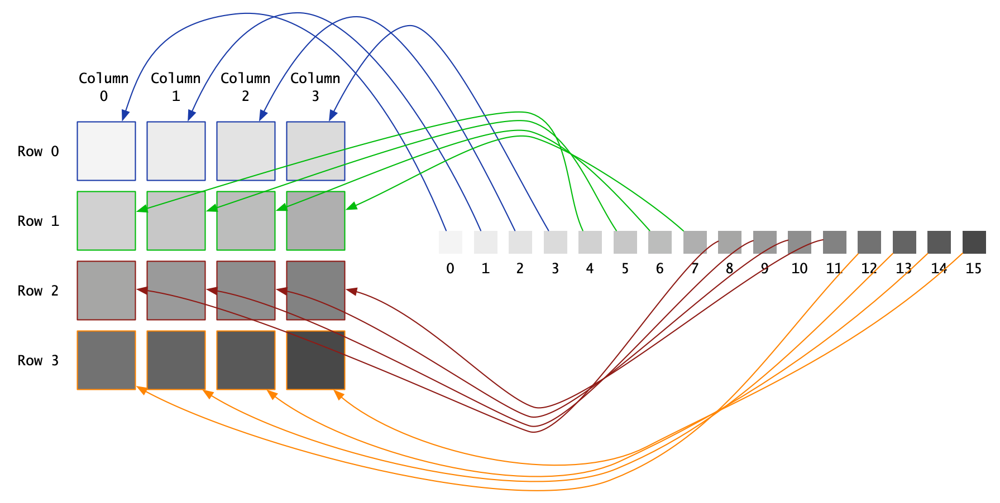
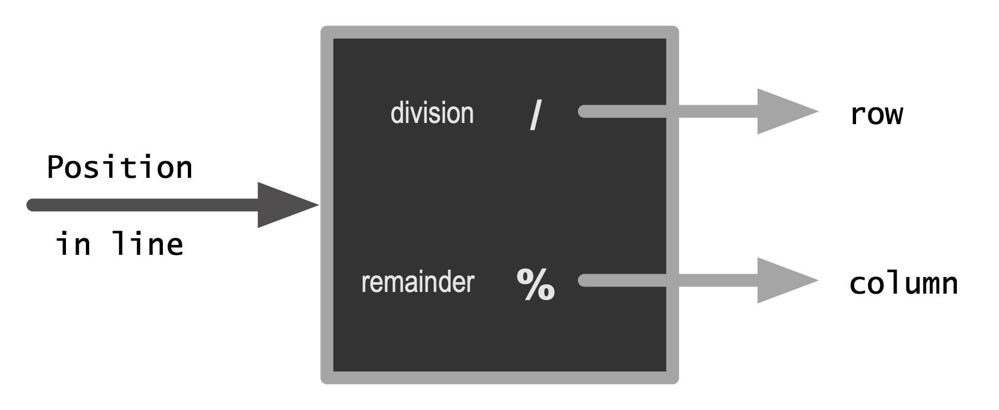

Integer division and modular arithmetic#
The “mod” operator is a good opportunity to discuss integer division and modular arithmetic in programming. The modulo operation in Java is assigned to the operator %. The standard definition is that m%n returns the (integer) remainder of the (integer division) of \(m\) by \(n\). The mathemagics of the operation are captured by the equation:
The square brackets above are the integer part, [1] e.g. \([3.14] = 3\). The operator % returns \(r\) from the equation above. It can be shown that \(0\leq r\leq n-1,\forall m\in\mathbb{Z}\). This is an interesting property of the remainder operation m%n. For a fixed \(n\), as \(m\) assumes different values, the result of m%n steps from \(0\), to \(1, \ldots\) to \(n-1\), and then back to \(0\).
We can use this modular property in many ways, computationally. A popular use is to convert a serial collection to a two-dimensional arrangement. Imagine, for example, 16 people waiting to be seated in a (very) small theater with 4 rows, each with 4 seats. How can we group these people, 4-to-row, as shown below?

Simple illustration of mapping a linear collection of 16 items to a two-dimensional arrangement of 4x4.#
We begin by assigning each person a number, showing their position in line. From now on, when counting, we’ll start from 0. Initially it may feel a bit odd to assign the first person to 0, the second to 1, etc. But it makes sense. Think of the number assigned to a person as the count of people ahead in line. There are 0 people in front of the first person, 2 people ahead of the third person, etc.
Next we assign each person to the following row number.
The square brackets indicate integer division. There are 4 sears per row, so:
The column for each person can be found in a similar way.
These two integer operations (division and remainder) allow us to map a linear collection (e.g., people waiting in line) to a two-dimensional structure (e.g., seats in an airplane, stadium, etc).
The column number above, will cycle through \(0, 1, \ldots\) up to \(\textrm{number of seats per row}-1\).

A simple mechanism to take a number and convert it to two numbers, representing a (row, column) reference in a two-dimensional grid.#
The mechanism illustrated above can be implemente, naively for now, as follows.
- ..literalinclude:: ../codeExamples/IntroProgramming/IntegerOperations/src/NaiveLinearTo2D.java
- linenos:
- language:
java